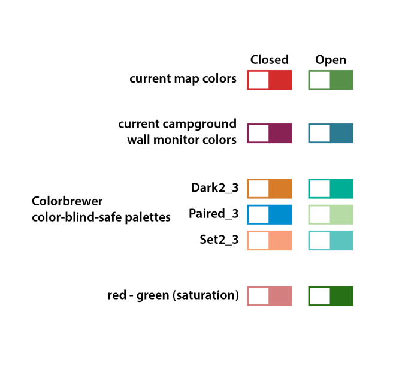
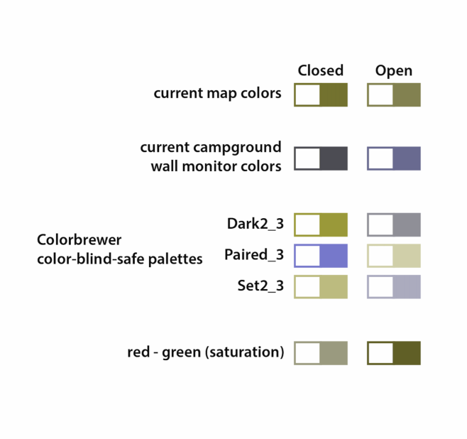
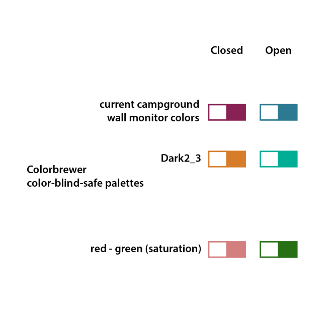
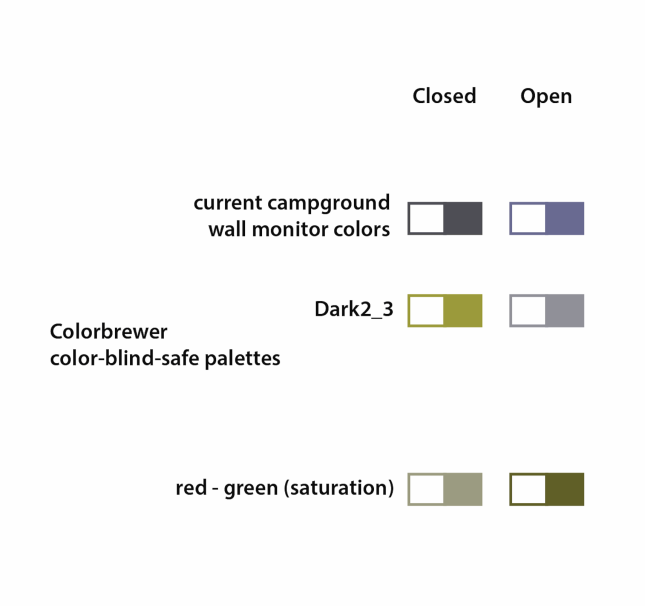

Deuteranopia, the most common red/green color perception deficiency found amongst males, is simulated using the Color Oracle application in the following images.
The best color-blind-friendly designs use:
From B. Jenny and N. Vaughn Kelso,
"Color Design for the Color Vision Impaired",
Cartographic Perspectives no. 58, Fall 2007.
We aim to use consistent colors for "open" and "closed" across Yellowstone Live maps and wall monitor displays.
First pass: color options
 Colors used in this study
 Matches a scheme initially used for campground wall monitors
Deuteranopia simulated
Color-blind safe
Deuteranopia simulated
Uses saturation as a visual variable
Deuteranopia simulated
applied to the campground map
Deuteranopia simulated
Uses both color and pictographic symbol to reinforce categories
With thinner line symbols
Deuteranopia simulated
Park staff favored a hybrid color scheme comprised of the dark green from the red/green scheme and the orange from the ColorBrewer Dark2_3 scheme. The orange is stronger, visually, than the desaturated red (pink) and doesn't convey "closed" as much as "different from public usage". Gray is favored to indicate closed, and the thinner line weight is preferred.
Deuteranopia simulated
Campground and lodging maps adjusted to match hybrid scheme